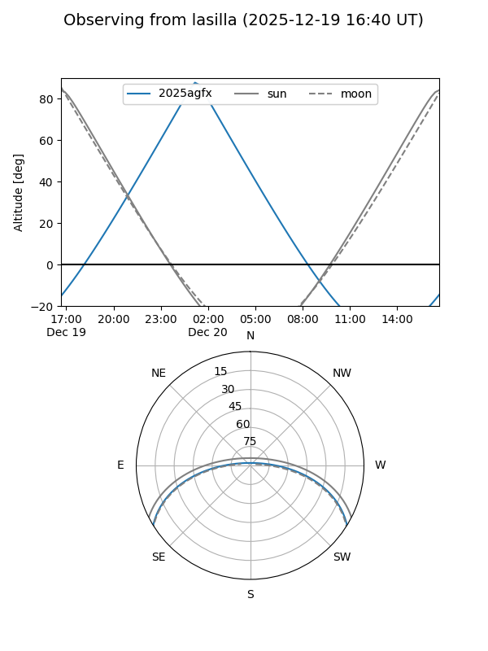
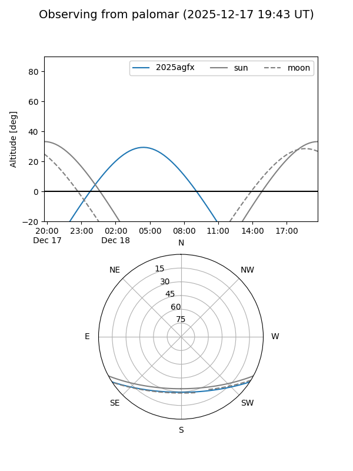
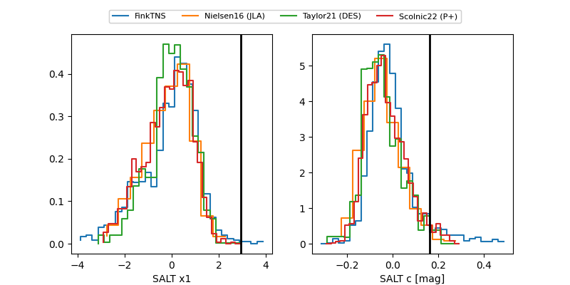

2025agfx
Target 2025agfx at 2025-12-21 06:03
Aliases and brokers:
FINK: fink-portal.org/ZTF25acgigai
Lasair: lasair-ztf.lsst.ac.uk/objects/ZTF25acgigai
ALeRCE: alerce.online/object/ZTF25acgigai
TNS: wis-tns.org/object/2025agfx
YSE: ziggy.ucolick.org/yse/transient_detail/2025agfx
alt names
ZTF25acgigai (ztf,fink_ztf)
2025agfx (tns,yse)
ATLAS25pkx (atlas)
Coordinates:
equatorial (ra, dec) = 36.3902,-27.37578
equatorial (HMS+DMS) = 02:25:33.65,-27:22:32.79
galactic (l, b) = (219.0483,-69.11093)
Flags:
Photometry:
last ztfg=19.21, ztfr=19.20
3 ztfg, 4 ztfr detections
Lightcurve

Visibility


Additional plots
